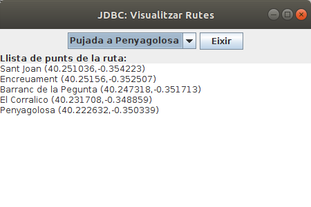

Exercicis¶
Els següents exercicis, posa'ls tots en un paquet del projecte Tema4 anomenat exercicis
 Exercici 4_1¶
Exercici 4_1¶
Crea un programa Kotlin anomenat Ex4_1_CreaTaulesRuta.kt que cree les taules necessàries per a guardar les dades de les rutes en una Base de Dades SQLite anomenada Rutes.sqlite.
Han de ser 2 taules:
- RUTES : que contindrà tota la informació del conjunt de la ruta. La clau principal s'anomenarà num_r (entera). També guardarà el nom de la ruta (nom_r), desnivell (desn) i desnivell acumulat (desn_ac). Els tipus d'aquestos tres camps últims seran de text, enter i enter respectivament.
- PUNTS : que contindrà la informació dels punts individuals de les rutes. Contindrà els camps num_r (número de ruta: enter) , num_p (número de punt: enter), nom_p (nom del punt: text) , latitud (número real) i longitud (número real). La clau principal serà la combinació num_r + num_p . Tindrà una clau externa (num_r) que apuntarà a la clau principal de RUTES.
Adjunta tot el projecte, i també la Base de Dades Rutes.sqlite (normalment estarà dins del projecte)
Exercici 4_2¶
Crea una altre programa anomenat Ex4_2_PassarRutesObjSQLite.kt que passe les dades del fitxer Rutes.obj a les taules de Rutes.sqlite.
Per a major comoditat copiat el fitxer Rutes.obj que vam fer al projecte Tema3 dins d'aquest projecte, a més de les classes Coordenades.kt , PuntGeo.kt i Ruta.kt dins del paquet. Si el paquet s'anomena igual en els dos projectes (jo us havia suggerit exercicis) no hauria d'haver cap problema.
Concretament en el trasvassament d'informació:
- Per a cada ruta s'ha de considerar el número de ruta , que s'anirà incrementant, i a més serà la clau principal. La primera ruta ha de ser la número 1. A banda han d'anar la resta de camps.
- Per a cada punt s'ha de guardar el número de ruta i el número de punt (s'anirà incrementant des de 1 per a cada ruta). A banda han d'anar la resta de camps.
- T'aconselle vivament que abans d'executar les sentències SQL d'inserció, les tragues per pantalla, per veure si la sintaxi és correcta. Quan totes siguen correctes, pots substituir l'eixida per l'execució de les sentències.
Adjunta tot el projecte, i també la Base de Dades Rutes.sqlite , que normalment estarà situada dins del projecte
Exercici 4_3¶
Crea un programa anomenat Ex4_3_VisRutes_SQLite.kt , que mostre les rutes amb un aspecte similar a l'Exercici 3_4 , però accedint ara a les dades guardades en Rutes.sqlite :

Podríem mantenir la connexió fins que s'aprete el botó d'Eixir , que és quan la tancaríem.
Ací teniu l'esquelet del programa.
import javax.swing.JFrame
import java.awt.EventQueue
import java.awt.BorderLayout
import javax.swing.JPanel
import java.awt.FlowLayout
import javax.swing.JComboBox
import javax.swing.JButton
import javax.swing.JTextArea
import javax.swing.JLabel
class Finestra : JFrame() {
init {
// Sentències per a fer la connexió
defaultCloseOperation = JFrame.EXIT_ON_CLOSE
setTitle("JDBC: Visualitzar Rutes")
setSize(450, 450)
setLayout(BorderLayout())
val panell1 = JPanel(FlowLayout())
val panell2 = JPanel(BorderLayout())
add(panell1, BorderLayout.NORTH)
add(panell2, BorderLayout.CENTER)
val llistaRutes = arrayListOf<String>()
// Sentències per a omplir l'ArrayList amb el nom de les rutes
val combo = JComboBox<String>(llistaRutes.toTypedArray())
panell1.add(combo)
val eixir = JButton("Eixir")
panell1.add(eixir)
val area = JTextArea()
panell2.add(JLabel("Llista de punts de la ruta:"),BorderLayout.NORTH)
panell2.add(area,BorderLayout.CENTER)
combo.addActionListener() {
// Sentèncis quan s'ha seleccionat un element del JComboBox
// Han de consistir en omplir el JTextArea
}
eixir.addActionListener(){
// Sentències per a tancar la connexió i eixir
}
}
}
fun main(args: Array<String>) {
EventQueue.invokeLater {
Finestra().isVisible = true
}
}
Exercici 4_4¶
En aquest exercici anem a practicar la creació d'una classe que encapsule pràcticament tot el tractament de la Base de Dades, per a fer transparent el desfasament Objecte-Relacional. Per tant aquesta classe ha de ser capaç de llegir de les taules convertint a objectes, i també guardar la informació dels objectes en les taules. S'anomenarà GestionarRutesBD.
En un paquet nou del mateix projecte, anomenat util.bd haureu de fer la classe GestionarRutesBD , que és la que encapsularà tot. Internament només tindrà una propietat , la de connexió. Tindrà els següents mètodes:
- El constructor de GestionarRutesBD : establirà la connexió amb la Base de Dades Rutes.sqlite (per comoditat en el directori del projecte). Si no existeixen les taules RUTES i PUNTS les haurà de crear (podeu utilitzar la sentència CREATE TABLE IF NOT EXISTS ...)
- fun close() : tancarà la connexió.
- fun inserir(r: Ruta) : Inserirà en la BD les dades corresponents a la ruta passada per paràmetre (inicialment s'aconsella únicament "imprimir" les sentències, per veure si són correctes). El num_r ha de ser el posterior a l'última existent, per exemple amb la consulta SELECT MAX(num_r) FROM RUTES
- fun buscar(i: Int): Ruta? : torna la ruta amb el número passat com a paràmetre.
- fun llistat(): ArrayList
: torna un ArrayList de Ruta amb totes les rutes de la Base de Dades. - fun esborrar(i: Int) : esborra la ruta amb el número passat com a paràmetre (recordeu que els punts de la ruta també s'han d'esborrar)
Per a provar-lo podeu incorporar l'executable UtilitzarRutesBD.kt. Hauríeu de comentar les línies que no s'utilitzen en cada moment. Per exemple, si ja heu aconseguit inserir la ruta, i continueu provant el programa per als mètodes buscar() i llistat() , comenteu la línia gRutes.inserir(r) per a no inserir-la més vegades.
fun main(args: Array) {
// Creació del gestionador
val gRutes = GestionarRutesBD()
// Inserció d'una nova Ruta
val noms = arrayOf( "Les Useres", "Les Torrocelles", "Lloma Bernat", "Xodos (Molí)", "El Marinet", "Sant Joan")
val latituds = arrayOf(40.158126, 40.196046, 40.219210, 40.248003, 40.250977, 40.251221)
val longituds = arrayOf(-0.166962, -0.227611, -0.263560, -0.296690, -0.316947, -0.354052)
val punts = arrayListOf()
for (i in 0 until 6){
punts.add(PuntGeo(noms[i], Coordenades(latituds[i], longituds[i])))
}
gRutes.inserir(Ruta("Pelegrins de Les Useres",896,1738,punts))
// Llistat de totes les rutes
for (r in gRutes.llistat())
r?.mostrarRuta()
// Buscar una ruta determinada
val r2 = gRutes.buscar(2)
if (r2 != null)
r2.mostrarRuta()
gRutes.close()
}
Llicenciat sota la Llicència Creative Commons Reconeixement CompartirIgual 2.5